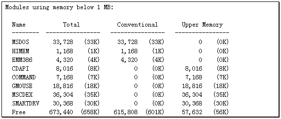
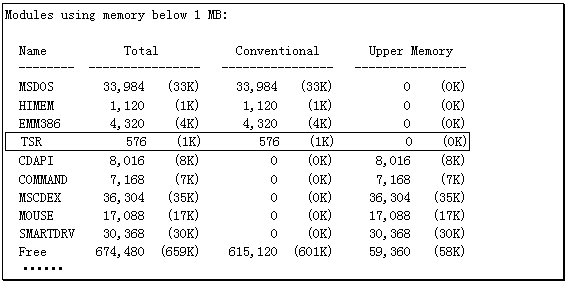
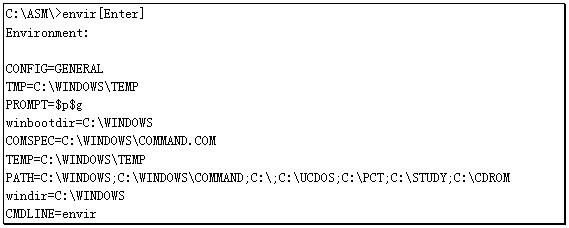

通过前面九章的学习，我们已经掌握了8086/88全部的汇编语言指令，以及PC电脑的一些基本原理，同时还有很多软件方面的知识。不过单凭这样一些东西还不足以成为高水平的程序设计者，掌握更多的资料，学习更多的技术才是通往成功的道路。更多的资料需要大家自己去收集，而学习更多的技术就是本书这最后一章所要献给读者的。
提到内存驻留程序想必大家都不陌生，MS-DOS操作系统里就有一些程序是需要驻留内存的，比如SMARTDRV.EXE，还有MSCDEX.EXE。我们使用的一些设备，比如鼠标器，也要有一个驻留内存的驱动程序。这些程序执行之后就留在内存之中，占据一定的内存空间。我们可以利用DOS提供的MEM程序观察到内存中驻留的程序：
C:\DOS\>MEM/C[Enter]

这里只给出部分显示的内容，实际显示的内容比上面列出的要多，其它有关扩展内存的内容与本章所要讨论的问题无关。
如何编制驻留内存的程序？有两个问题是必须要解决的：第一是如何让程序老老实实地留在内存之中；第二就是如何让CPU在我们指定的时候能够执行到这个程序。
第一个问题不难解决，DOS为程序设计者单独提供了一个中断用于将程序驻留在内存之中并将系统控制权转移给操作系统。这个中断就是"INT 27H"。
这个中断与INT 10H、INT 21H之类不同，它只有一个功能就是将程序驻留在内存之中。它的应用也很简单，在执行INT 27H之前将需要驻留于内存中的程序长度送入DX寄存器，然后执行INT 27H，此时系统将回到DOS提示符下。请看下面的程序示例TSR.ASM。
code segment
assume cs:code,ds:code
org 100h
main proc near
jmp start ；跳过数据区
msg db I am already installed in the memory',07h,0dh,0ah,24h
start:
mov ah,9 ；显示字符串MSG
mov dx,offset msg
int 21h
mov dx,offset tail ；将驻留内存部分的长度送入DX寄存器
int 27h ；驻留内存并返回操作系统
tail label near ；程序尾
main endp
code ends
end main
将此程序编译连接生成一个COM文件，然后在DOS状态下运行这个程序，它会显示一段文字，之后重新回到DOS状态。此时可以用MEM程序观察一下内存中的变化：
C:\ASM\>MEM/C/P[Enter]

可以看到内存中的确多了个TSR程序，占据了576个字节。如果反复运行TSR.COM，那么内存中就会出现越来越多的TSR，同时内存也会逐渐减少。
为什么一个很小的程序驻留内存后却占了不少内存？这个问题说起来话就长了。真正驻留在内存中的并不仅仅是程序代码，还有DOS安排的PSP，以及环境信息。而且无论驻留内存的东西总量有多少，DOS为其分配的内存也总是16字节的整数倍。换句话说，即使驻留内存的数据只有一个字节，DOS也要分出16个字节给它。
关于环境信息的问题有必要在此解释一下。所谓环境信息，其实就是我们通过CONFIG.SYS和AUTOEXEC.BAT设置的"PROMPT=???"、"PATH=???"以及其它使用"SET"命令设置的内容。这些内容由DOS组织在一起形式DOS的环境信息。为了能够上用户编制的程序也能使用这些信息，DOS每次在调入一个可执行程序时都要额外分配一块内存空间将组织好的环境信息复制一份。这一块内存的段地址存放在程序段前缀（PSP）偏移002CH处，占两个字节。
环境信息都是由ASCII码组成的字符串，从环境内存段偏移0处开始，每个字符串都以00H结尾。环境信息总的结尾处还有一个00H。程序ENVIR.ASM可以在屏幕上显示DOS的环境信息：
code segment
assume cs:code,ds:code
org 100h
main proc near
jmp start ；跳过数据区
msg db Environment:',0dh,0ah,0ah,24h
start:
mov ah,9 ；显示字符串MSG
mov dx,offset msg
int 21h
mov bx,002ch ；BX寄存器指向PSP偏移2CH处
mov ax,word ptr [bx] ；从[BX]地址处取得一个字数据
mov ds,ax ；这个数据就是环境块的段地址
xor si,si ；SI寄存器指向环境块首
disploop:
call dispchr ；输出一个以0结尾字符串
mov ah,02h ；输出回车、换行符
mov dl,0dh
int 21h
mov dl,0ah
int 21h
cmp byte ptr [si],0 ；已经显示了所有的环境信息吗？
jnz disploop ；未显示完所有信息，转DISPLOOP
mov ah,4ch ；结束进程
int 21h
main endp
dispchr proc near ；显示字符串的子程序
push ax ；保存寄存器
push dx
mov ah,02h ；选择DOS API的02H功能
loop1:
lodsb ；取得一个字符
or al,al ；这个字节是0吗？
jz return ；若这个字节是0，返回主过程
mov dl,al ；将这个字符送入DL寄存器
int 21h ；并显示输出
jmp loop1 ；转LOOP1继续显示下一个字符
return:
pop dx ；恢复寄存器
pop ax
ret ；返回主程序
dispchr endp
code ends
end main
在笔者的机器上运行这个程序可以有以下的输出结果：

DOS每次调入一个程序就要复制一组环境信息，当一个程序驻留在内存中时，这个程序对应的环境信息块也同时驻留于内存中，所以我们会观察到驻留内存看程序占用的空间比其实际长度要大。
解决了程序的驻留问题，下一步就是要研究怎样让CPU按我们的意愿来适时地执行这个程序。要知道一个程序如果驻留在内存中之后就再也不被执行了，那么这个程序是毫无意义的。驻留内存的程序怎样才能被执行呢？
采用"中断"技术是一个最常用的途径。因为PC电脑可处理的中断较多，达256个，而且最吸引人的是每个中断的服务程序可以在内存中的任意位置。只要将服务程序的入口地址正确填入中断向量表内，那么无论服务程序在何处CPU都能准确无误地执行。由此我们想到可以把驻留在内存中的程序编写成某个中断的服务程序，需要这个程序执行时调用相应的中断即可。
许多流行的软件都是这样做的，比如SideKick，以及专门抓取屏幕图形的PZP软件等。就连我们常用的DEBUG也要重编01H和03H中断服务程序，以实现它的"P"、"T"和"G"命令。所以说重编中断服务程序是驻留内存技术中一个十分重要的环节。
在真正开始编写中断服务程序之前我们必须对PC系统的各个中断有一个总体的了解才行，附录A给出了所有256个中断的用途，这其中有一些中断系统没有使用。
对于编制驻留内存程序而言，并非所有的中断都常用，也并非只能使用系统保留的中断。本章只对应用最广的几个中断做较详细的解释，并给出一些程序示例说明编制中断服务程序的要点。
这是一个由键盘产生的硬件中断，每次当我们把一个键按下时，键盘就会发出一个中断信号，这个信号称为IRQ1。CPU收到信号后就会执行09H中断服务程序，系统提供的服务程序用于从键盘取得按键的扫描码，每个扫描码都是一个字节的数据。
当一个按下的键被放开时键盘同样产生IRQ1信号，CPU也会执行09H中断服务程序从键盘接收扫描码。一般我们把按下键产生的扫描码称为"通码"，把放开键产生的扫描码称为"断码"。通码的最高位（Bit7）都是0，而断码的最高位都是1。09H中断服务程序也是根据这一特点来区分通码与断码的，它只处理通码。
如果我们重编09H中断服务程序，那么我们就能对键盘上的各个键重新定义。比如一般情况下按下[Enter]是回车，按下[Space]是空格，而我们重新编写的中断服务程序完全可以在接收到[Enter]键的扫描码时将其解释为空格，接收到[Space]时把它解释为回车。这样就等于键盘完全被我们的程序接管了。